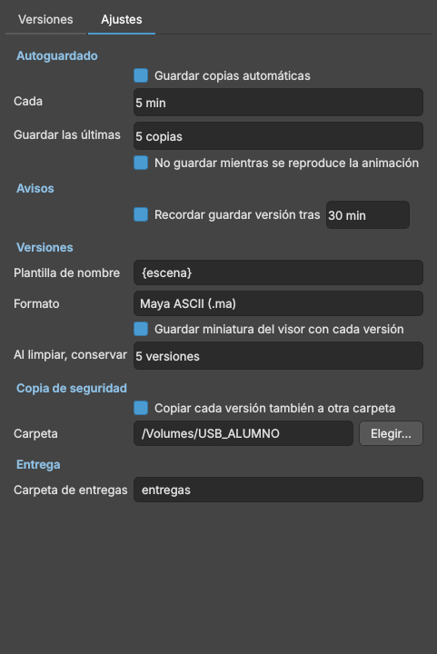

Para qué sirve
SimpleSave guarda tu escena por versiones, cada una con una nota y una miniatura, y hace copias automáticas para que no pierdas trabajo si Maya se cierra. Nunca pisa una versión anterior.
Guardar versión
- Clic en el icono SimpleSave, o Ctrl+Alt+S (⌘+Alt+S en Mac), o el botón azul del panel.
- Escribe en una línea qué has hecho («brazos», «UVs del casco»). Es opcional, pero dentro de una semana lo agradecerás.
- Cada vez se crea un archivo nuevo:
robot_v001.ma,robot_v002.ma…
Ctrl+S sigue funcionando como siempre: guarda encima de la versión que tienes abierta.
Consejo
Guarda versión cada vez que termines una parte. Si pasan 30 minutos sin hacerlo, verás un aviso en el visor.
La primera vez
Si la escena no tiene nombre, SimpleSave te pide los datos para formarlo. Escribe con normalidad: las tildes, la ñ y los espacios se corrigen solos y ves el nombre final antes de guardar. El formato del nombre (por ejemplo {asignatura}_{apellido}_{escena}) se elige en Ajustes.

El panel de versiones
Clic derecho en el icono › Ver versiones abre la lista con su miniatura y su nota.
| Acción | Qué hace |
|---|---|
| Abrir | Abre esa versión |
| Restaurar | Copia una versión antigua como versión nueva y la abre. La que tenías sigue ahí |
| Clic derecho | Editar la nota, marcarla como importante, mostrarla en la carpeta |
| Comparar versiones | Entre dos versiones: qué objetos se añadieron o se borraron y cuántas caras cambiaron (también en el clic derecho del icono) |
El punto naranja de arriba significa que tienes cambios sin guardar.
Si Maya se cierra
SimpleSave hace una copia automática cada pocos minutos si has cambiado algo (5 por defecto; se cambia en Ajustes). Al volver a abrir Maya o la escena, si hay una copia más reciente que tu última versión, te pregunta si quieres recuperarla. Se guarda como versión nueva, así que no pierdes nada aunque te equivoques. También puedes buscarla tú: clic derecho en el icono › Recuperar autoguardado.
Entregar
- Guarda una última versión con una nota tipo «entrega».
- Pulsa Entregar en el panel. En la carpeta
entregasdel proyecto aparecen<nombre>_entrega.may un.zipcon la escena y sus texturas. - Si el aviso dice que alguna textura estaba fuera del proyecto, muévela a
sourceimagesy vuelve a entregar.
Copia en el USB o en la nube
En Ajustes, activa Copiar cada versión también a otra carpeta y elige la carpeta del USB, Drive u OneDrive. Si el USB no está conectado, la versión se guarda igual en el ordenador y el panel te avisa.

En el estante
| Cómo | Orden |
|---|---|
| Clic en el icono | Guardar versión |
| Clic derecho | Ver versiones |
| Clic derecho | Recuperar autoguardado |
| Clic derecho | Comparar versiones |
Ajustes en MantiTools

Autoguardado
| Ajuste | Valores | Qué hace | Clave |
|---|---|---|---|
| Autoguardado activado | Sí / no | autoguardado |
|
| Cada | 1 a 120 min | minutos |
|
| Copias que guarda | 1 a 50 | copias |
|
| No guardar mientras se reproduce o renderiza | Sí / no | pausa_reproduccion |
Versiones
| Ajuste | Valores | Qué hace | Clave |
|---|---|---|---|
| Plantilla de nombre | Texto | Por ejemplo {escena} o {asignatura}{apellido}{escena}. La versión se añade sola. | plantilla |
| Formato | .ma, .mb | formato |
|
| Guardar miniatura con cada versión | Sí / no | miniaturas |
Copia de seguridad
| Ajuste | Valores | Qué hace | Clave |
|---|---|---|---|
| Copiar cada versión a otra carpeta | Sí / no | copia_activada |
|
| Segunda carpeta | Una carpeta | Un USB o una carpeta de la nube. | copia_carpeta |